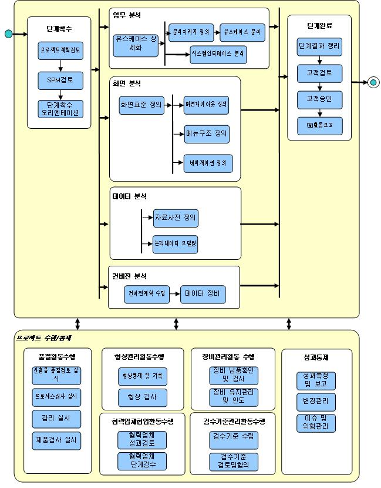

1. 개요 (Overview)
|
구분 |
내용 |
|
목표
(Goal) |
요구정의 단계에서 정의된 요구사항을 시스템 기능으로 정형화하고 실제 구현환경과는 독립적으로 시스템을 구조화한다. |
|
수행 범위
(Process Scope) |
l 업무 분석 : 사용자의 기능적 요구사항을 상세화하고, 실제 시스템의 기능 구현을 위해 필요한 분석클래스를 도출하여 정의
l 화면 분석 : 사용자와 시스템 간의 상호작용을 위한 화면을 정의하고 화면 간의 이동관계를 정의
l 데이터 분석 : 기존 시스템의 데이터 분석 및 요구사항을 반영하여 목표 시스템의 데이터 구조를 정의
l 컨버전 분석 : 기존 시스템의 데이터를 분석하여 오류 데이터를 추출하고, 정비 룰을 정의하거나 직접 데이터를 수정 |
2. 정책 (Policy)
2.1 프로젝트의 각 서브시스템 별로 선정된 PL의 책임 하에 분석자가 분석 단계를 수행한다.
2.2 분석 모델은 실제 구현환경과는 독립적으로 시스템을 구조화하는 것이며 이것은 시스템의 논리적 구조에 초점을 맞추게 된다. 이는 설계 단계의 구조 혹은 실제 구현환경에서 발생하는 변경사항에 대해 분석단계의 시스템 구조가 크게 영향 받지 않고 안정적인 형태를 유지할 수 있도록 구성되어야 한다는 의미이다.
2.3 요구정의 단계에서 정의된 유스케이스는 시스템 개발의 기본이 되는 기능 요구사항 단위로서, 분석 모델은 유스케이스를 기반으로 시스템 기능을 정제하고 상세화하여 구성한다. 따라서 유스케이스와 분석 모델 간의 추적관계를 지속적으로 유지하여야 한다.
2.4 분석 단계는 크게 세가지 부분, 사용자와의 상호작용을 담당하는 화면단 부분 (화면 분석), 업무 처리로직을 담당하는 서버단 부분 (업무 분석), 업무 수행에 필요한 데이터관리 부분 (데이터 분석, 컨버전 분석)으로 나누어 진행한다. 각각의 분석 작업은 동시에 진행될 수 있으나 도출된 분석 모델은 서로 간의 관련내용이 반드시 일관성을 유지해야만 한다.
2.5 반복점증적(iterative & incremental) 개발주기 계획을 수립하고 매 개발주기의 목적에 따라 결과물의 검토 및 평가가 이루어져야 한다.
3. 공정 흐름도(Process Flow Diagram)

4. 고려사항(Considerations)
4.1 요구정의 단계에서 파악된 비즈니스프로세스, 비즈니스엔티티, 요구사항정의서 등의 산출물은 시스템 관점에서의 분석을 진행하는 시작점이 된다.
4.2 분석 단계 진행 중 초기 요구사항이 상세화 되거나 변경될 경우 요구사항 변경 절차에 따라 요구사항 변경을 수행하고, 관련 모델에 반영하도록 한다.
4.3 분석 모델은 실제 시스템의 기능 구현을 위해 필요한 클래스의 정의와 해당 클래스의 역할을 정의하는 데 중점을 두어 작성한다. 또한 사용자와의 상호작용을 담당하는 화면의 구성 및 체계를 정의하고, 시스템이 다루는 정보를 논리적 엔티티로 정의하고 엔티티간의 관계를 정의한다. 이렇게 작성된 분석 모델은 설계 단계를 수행하면서 구현 기술을 기반으로 구체적인 설계 모델로 분리 또는 통합된다.
|